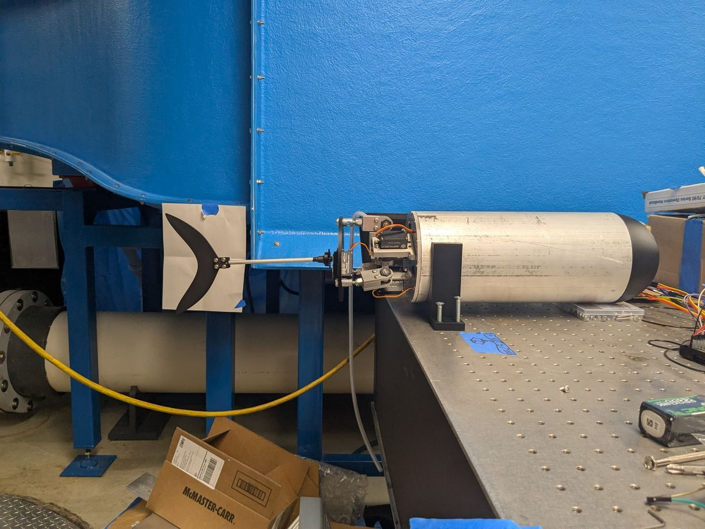
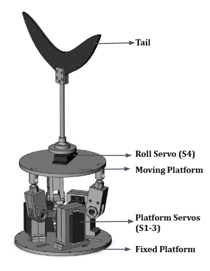
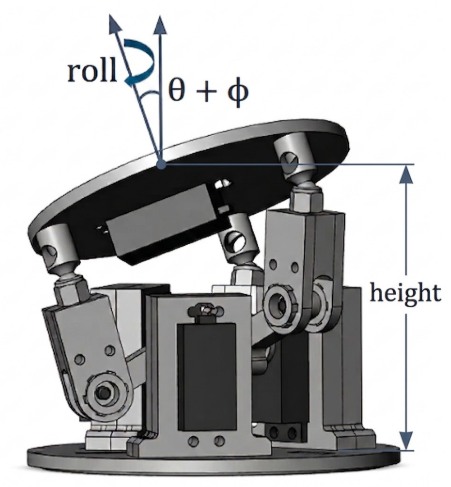
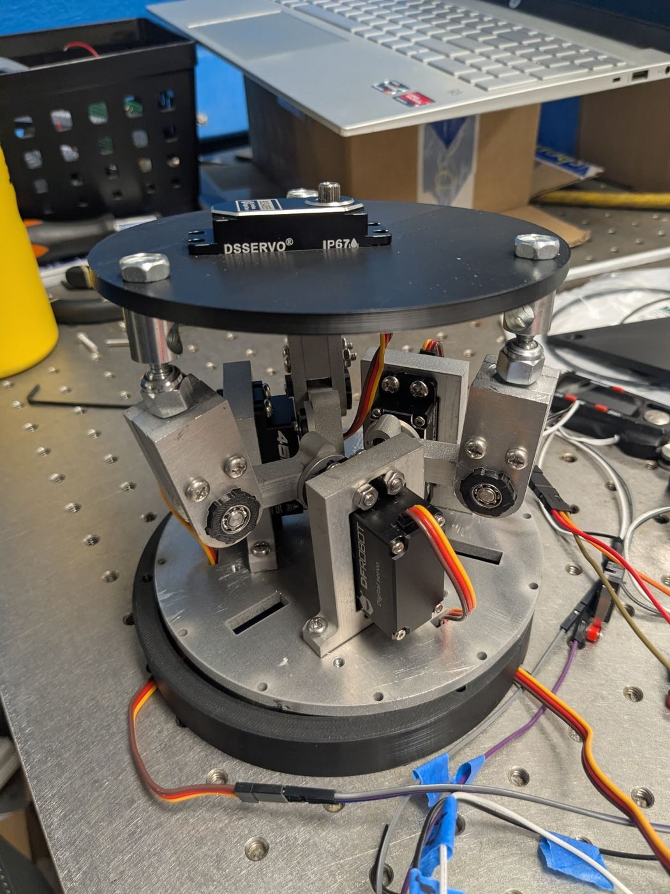
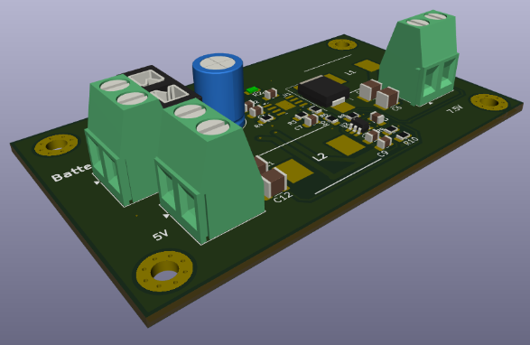

Undergraduate research · UMD Hydrodynamics Lab · In progress
Fish-Inspired UUV
- SolidWorks
- CNC milling
- Waterjet
- KiCad
- Raspberry Pi
- ROS 2
- Python

Overview
Today's underwater vehicles tend to be good at one of two things: fish-like caudal fins swim efficiently over long distances but struggle in tight spaces, while side-mounted propellers improve maneuverability at the cost of a lot of drag. This project aims for both. I designed and built an untethered, fish-inspired UUV whose tail fin is driven by a 4-DOF parallel manipulator, so the fin can sweep in any direction, roll, and change its distance from the body instead of just flapping side to side.
The manipulator moves the fin anywhere within a 50° cone with 180° of roll, and the fish has been tested underwater producing sine-wave gait motions. The work was advised by Professor Cecilia Huertas-Cerdeira and supported by UMD's ASPIRE Scholarship, and I presented it at the Summer Undergraduate Research Conference (SURC).
Video
Watch the fin manipulator in motion (YouTube)
Manipulator
Three servos on the fixed platform drive a 3RRS mechanism: each servo moves a limb with two revolute joints and a spherical joint that together tilt and raise the moving platform. A fourth servo on the moving platform rolls the fin. I chose 3RRS over a design with prismatic joints because it reaches the needed platform angles with fewer motors, and sized it to get wide sweep angles without widening the body (and its drag).


Build and waterproofing
I designed the manipulator in SolidWorks and machined it in aluminum in-house on a CNC mill, waterjet, and bandsaw, after an initial PLA prototype. Keeping the electronics dry took several layers:
- Gaskets under screwed-on end caps, so the hull can still be opened to swap batteries
- A cast silicone sock sealing the space between the two platforms without restricting their motion
- 3M 4200 sealant on every wire and screw pass-through, an epoxied 3D-printed nose, and the LiPo battery in its own enclosure
I submersion-tested each seal for up to an hour, the longest the fish will be underwater during testing. The sealed manipulator only passed about half the time at first; after further machining and tighter fastening, it passed consistently.

Electronics
An 11.1 V LiPo battery feeds a custom power board I designed in KiCad, with two DC-DC converters producing a 5 V rail for the Raspberry Pi and a 7.4 V rail for the servos, plus a fuse and reverse-polarity protection. The Pi commands the servos over I²C through a PCA9685 PWM driver.

Software
The Raspberry Pi runs a ROS 2 pipeline: a gait generator outputs sine-wave targets for the four variables, an inverse-kinematics node converts them into servo angles, and a servo node drives the hardware. The IK has no closed-form solution, so it's solved numerically. My first version (SymPy's nsolve) took about 700 ms per step and made the motion jerky; switching to SciPy's fsolve on lambdified equations cut that to about 6 ms and made it smooth.
On startup, a homing routine drives each platform limb down to a limit switch so the software knows where every limb is before anything moves. Launch files start either a sine-wave gait or a GUI that steers the platform with the mouse.
Next steps
- Wider sweep: the off-the-shelf ball joints only allow about 30° of motion, the main limit on sweep angle. Custom joints could allow larger angles for more efficient swimming and sharper turns.
- Neutral buoyancy: the hull is large enough to need added, carefully placed weight so the fish sits neutrally and swims level.
- Tracking and closed-loop control: an onboard IMU plus an overhead camera, combined with state estimation, to track the fish's position and close the control loop.
- Testing the hypothesis: measuring turning radius and efficiency to see whether the 4-DOF fin really delivers both.